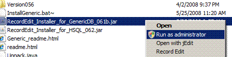
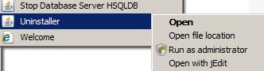

The Java_Run_As_Administrator.exe program will add a Run as Administrator option to Windows Right Click Menu for Java Jar's. You will need to this if you whish to
After you have run Java_Run_As_Administrator.exe, you should have a run as administrator option as on the Right Click menu in Windows Explorer
You should also have a run as administrator when you right Click on a Jar main menu item as Below:
Please let me know (bruce_a_martin@sourceforge.net) of any problems / wether it works on your system.